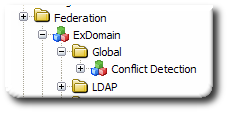
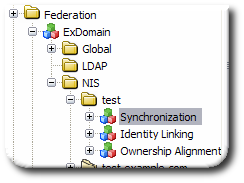

Chapter 10. Configuring Identity Federation
- 10.1. About Identity Federation
- 10.2. Creating the Federation Domain
- 10.3. Creating Templates
- 10.4. Adding LDAP Local Repositories through Penrose Studio
- 10.5. Adding NIS Local Repositories Using Penrose Studio
- 10.6. Linking Identities
- 10.7. Resolving UID and GID Conflicts
- 10.8. Checking File Ownership with the Ownership Alignment Tool
- 10.9. Synchronizing (or Migrating) NIS Data to LDAP
This chapter describes how to configure identity federation for NIS, LDAP, and Active Directory sources.
10.1. About Identity Federation
Identity federation or identity linking is a method to unite entries from Active Directory, LDAPv3, or NIS servers. This method can be used to synchronize these types of servers or to simplify a NIS migration.
Identity federation is similar to mapping, which takes source entries to create a virtual directory entry, but is for different source environments. Identity linking, like join mapping, takes entities from different sources and combines them to create a single global directory entry. (Unlike join mapping, identity linking does not depend on having a single common attribute shared among the other source entries.)
Not every infrastructure can use a purely virtual directory because of requirements for migrations, synchronization, or other network changes. In these cases, Penrose Virtual Directory provides identity linking. Identity linking (or federation) creates a hybrid virtual directory and meta directory by using a global repository to combine and synchronize entries from the different sources. Local repositories (analogous to sources in the virtual directory configuration) are linked to the global repository. Using a mapping tool, the local identities are then matched to entries in the global repository.
Identity linking works with a smaller number of source types than virtual directory configuration. These can be any of three things:
LDAPv3 servers, such as Red Hat Directory Server
Active Directory
NIS servers
For example, in Figure 10.1, “Merging Entries through Identity Linking”, there is no common attribute among the NIS, LDAP, and Active Directory identities. With identity linking, there is a global repository, a separate and authoritative LDAP source for entries. In this figure, a NIS source is used to create the initial global entry. After that global repository is defined, entries from other sources (local repositories) are linked to the global entry either manually or through matching rules.

Figure 10.1. Merging Entries through Identity Linking
There are several important differences between join mapping and identity linking:
Identity linking can combine entries which do not share a common attribute, using a tool to identify and link entries between sources, as described in Section 10.6, “Linking Identities”.
Identity linking is configured through a plug-in which works with NIS, LDAP, and Active Directory sources.
Identity federation uses a centralized, specialized partition to create a federation domain. Each source repository is configured as its own sub-partition, which both defines its own connections, sources and mappings and also points back to the federation domain.
Federating or linking identities has the following process:
Create the federation domain (Section 10.2, “Creating the Federation Domain”).
Create templates for the different repository types (Section 10.3, “Creating Templates”).
Alternatively, it is also possible to add individual local repositories through Studio (Section 10.4, “Adding LDAP Local Repositories through Penrose Studio” and Section 10.5, “Adding NIS Local Repositories Using Penrose Studio”).
Configure attribute mapping (Section 9.6, “Creating Advanced Mappings”).
Link local identities to global identities (Section 10.6, “Linking Identities”).
Optionally. Migrate and synchronize NIS information (Section 10.9, “Synchronizing (or Migrating) NIS Data to LDAP”).
Resolve any conflicts between UID and GID numbers among global entries (Section 10.7, “Resolving UID and GID Conflicts”).
10.2. Creating the Federation Domain
Identity federation works by creating relationships between different repositories of information. The primary organization for identity federation is a domain; each repository of information belongs to that domain. The domain and repositories themselves are essentially partition entries. The federation
The first step for configuring identity federation is creating the federation domain.
NOTE
The federation domain must be created manually.
Open the partitions directory.
cd /opt/vd-server-2.0/partitions
Create a new directory; the name of the directory is the name of the new federation domain. For example:
mkdir ExDomain/
Open the new federation directory.
cd ExDomain/
Create a
DIR-INF/directory.mkdir DIR-INF/
In the
DIR-INF/directory, copy over the regular partition files,partition.xml,connections.xml,sources.xml,modules.xml, anddirectory.xml. For example:cd DIR-INF/ cp /opt/vd-server-2.0/conf/*.xml .
Edit the
partition.xml; this file is blank.vim partition.xml <?xml version="1.0" encoding="UTF-8"?> <!DOCTYPE partition PUBLIC "-//Penrose/DTD Partition 2.0//EN" "http://penrose.safehaus.org/dtd/partition.dtd"> <partition />
Create the
federation.xmlfile. This file will eventually hold the entries for the global and local repositories.For example:
vim federation.xml <?xml version="1.0" encoding="UTF-8"?> <!DOCTYPE directory PUBLIC "-//Penrose/DTD Directory 2.0//EN" "http://penrose.safehaus.org/dtd/directory.dtd"> <federation> </federation>
Edit the
modules.xmlfile to use the federation modules. There are several different modules to load for federation, including the main federation module, modules for the NIS and LDAP repositories, and plug-ins to manage user and group conflicts.vim modules.xml <?xml version="1.0" encoding="UTF-8"?> <!DOCTYPE modules PUBLIC "-//Penrose/DTD Modules 2.0//EN" "http://penrose.safehaus.org/dtd/modules.dtd"> <modules> <module name="Federation"> <module-class>org.safehaus.penrose.federation.module.FederationModule</module-class> <parameter> <param-name>config</param-name> <param-value>federation.xml</param-value> </parameter> <parameter> <param-name>repositoryTypes</param-name> <param-value>LDAP,NIS</param-value> </parameter> <parameter> <param-name>conflictDetections</param-name> <param-value>Users,Groups</param-value> </parameter> </module> <module name="LDAP"> <module-class>org.safehaus.penrose.federation.module.LDAPRepositoryModule</module-class> </module> <module name="NIS"> <module-class>org.safehaus.penrose.federation.module.NISRepositoryModule</module-class> </module> <module name="Users"> <module-class>org.safehaus.penrose.federation.module.ConflictDetectionModule</module-class> <parameter> <param-name>objectClass</param-name> <param-value>person</param-value> </parameter> <parameter> <param-name>attribute</param-name> <param-value>uidNumber</param-value> </parameter> </module> <module name="Groups"> <module-class>org.safehaus.penrose.federation.module.ConflictDetectionModule</module-class> <parameter> <param-name>objectClass</param-name> <param-value>posixGroup</param-value> </parameter> <parameter> <param-name>attribute</param-name> <param-value>gidNumber</param-value> </parameter> </module> </modules>Restart the server.
service vd-server start
When the server is restarted, the new federation domain shows up as a partition under the Partitions folder and is listed under the Federation folder, with NIS and LDAP subfolders for the repositories.
Configure the
connections.xmlfile to point to the global repository, which is an LDAPv3 server such as Red Hat Directory Server or Active Directory. For example:vim connections.xml <connections> <connection name="LDAP"> <adapter-name>LDAP</adapter-name> <parameter> <param-name>java.naming.provider.url</param-name> <param-value>ldap://server1.example.com:1389/ ldap://server2.example.com:1389/</param-value> </parameter> <parameter> <param-name>java.naming.security.principal</param-name> <param-value>cn=Directory Manager</param-value> </parameter> <parameter> <param-name>java.naming.security.credentials</param-name> <param-value>secret</param-value> </parameter> <parameter> <param-name>java.naming.ldap.attributes.binary</param-name> <param-value>SeeAlso</param-value> </parameter> </connection> </connections>The possible parameters to configure connections are listed in Table 6.1, “Connection Configuration Values”.
Edit the
directory.xmlfile. Only two virtual directory entries are necessary: one for the base DN (dc=example,dc=com) and one for the user-facing entry. Users will always access this subtree. On the backend, either the global repository or the local repository can be chained to that subtree. During a NIS migration, for example, this subtree can be chained toou=nis, the NIS repository. After migration is complete, the subtree can be chained toou=global. Users and LDAP clients, however, only have to access one subtree.NOTE
The configuration in the
directory.xmlfile depends on the formatting of the virtual directory tree and your infrastructure.For example:
vim directory.xml <?xml version="1.0" encoding="UTF-8"?> <!DOCTYPE directory PUBLIC "-//Penrose/DTD Directory 2.0//EN" "http://penrose.safehaus.org/dtd/directory.dtd"> <directory> <entry dn="dc=example,dc=com"> <oc>dcObject</oc> <at name="dc" rdn="true"> <constant>example</constant> </at> <oc>o</oc> <at name="o" rdn="true"> <constant>example</constant> </at> <aci> <permission>rs</permission> </aci> </entry> <entry dn="ou=federation,dc=example,dc=com"> <oc>organizationalUnit</oc> <at name="ou" rdn="true"> <constant>federation</constant> </at> </entry> </directory>
Once the federation domain entries are created, the federation configuration, including modules and containers for sources, directories, and mappings, is available in Penrose Studio.
Figure 10.2. Federation Domain Entries
10.3. Creating Templates
Penrose Server can use templates to automatically generate repositories that have consistent mappings, directory structures and modules.
10.3.1. Creating Global Templates
Open the federation domain partition directory.
cd /opt/vd-server-2.0/partitions/ExDomain/
Create a templates directory.
mkdir templates/
Open the new templates directory.
cd templates/
Inside the templates directory, create a new partition-style directory for the global repository. For example:
mkdir global/ mkdir global/DIR-INF/
Open the
DIR-INFdirectory.cd global/DIR-INF/
Create a new
partition.xmlfile that points to the federation domain and an entry for the global entry in thefederation.xmlfile.vim partition.xml <?xml version="1.0" encoding="UTF-8"?> <!DOCTYPE partition PUBLIC "-//Penrose/DTD Partition 2.0//EN" "http://penrose.safehaus.org/dtd/partition.dtd"> <partition depends="ExDomain,ex_global"> </partition>
Create a new
directory.xmlfile that defines the directory tree and entries for the global subtree.NOTE
The configuration in the
directory.xmlfile depends on the formatting of the virtual directory tree and your infrastructure.For example:
vim directory.xml <?xml version="1.0" encoding="UTF-8"?> <!DOCTYPE directory PUBLIC "-//Penrose/DTD Directory 2.0//EN" "http://penrose.safehaus.org/dtd/directory.dtd"> <directory> <entry dn="ou=global,dc=example,dc=com"> <oc>organizationalUnit</oc> <at name="ou" rdn="true"> <constant>global</constant> </at> <aci subject="self"> <permission>rws</permission> </aci> <aci> <target>ATTRIBUTES</target> <attributes>userPassword</attributes> <action>deny</action> <permission>rs</permission> </aci> <aci> <permission>rs</permission> </aci> </entry> <entry dn="ou=Users,ou=global,dc=example,dc=com"> <oc>organizationalUnit</oc> <at name="ou" rdn="true"> <constant>Users</constant> </at> </entry> <entry dn="uid=...,ou=Users,ou=global,dc=example,dc=com"> <entry-class>com.analog.penrose.directory.GlobalUserEntry</entry-class> <mapping-name>virtual_users</mapping-name> <at name="uid" rdn="true"> <variable>g.uid</variable> </at> <source alias="g" bind="required"> <partition-name>example</partition-name> <source-name>users</source-name> <mapping-name>virtual_users_to_global_users</mapping-name> <field name="uid" primaryKey="true"> <variable>rdn.uid</variable> </field> </source> <source alias="a" bind="required"> <partition-name>ex_global</partition-name> <source-name>users</source-name> <mapping-name>virtual_users_to_ad_users</mapping-name> <field name="objectGUID"> <variable>g.adiSeeAlsoObjectGUID</variable> </field> </source> <parameter> <param-name>checkAccountDisabled</param-name> <param-value>true</param-value> </parameter> </entry> <entry dn="ou=Groups,ou=global,dc=example,dc=com"> <oc>organizationalUnit</oc> <at name="ou" rdn="true"> <constant>Groups</constant> </at> </entry> <entry dn="cn=...,ou=Groups,ou=global,dc=example,dc=com"> <entry-class>org.safehaus.penrose.directory.DynamicEntry</entry-class> <mapping-name>virtual_groups</mapping-name> <at name="cn" rdn="true"> <variable>g.primaryKey.cn</variable> </at> <source alias="g"> <partition-name>example</partition-name> <source-name>groups</source-name> <mapping-name>virtual_groups_to_global_groups</mapping-name> <field name="cn" primaryKey="true"> <variable>rdn.cn</variable> </field> </source> <source alias="a"> <partition-name>ex_global</partition-name> <source-name>groups</source-name> <mapping-name>virtual_groups_to_ad_groups</mapping-name> <field name="objectGuid"> <variable>g.adiSeeAlsoObjectGUID</variable> </field> </source> </entry> </directory>Create the mappings for the global directory. Mappings are described in Section 9.6, “Creating Advanced Mappings”, and the number, types, and values of the mappings, as well as the source which supplies the values, varies for each deployment.
<mappings> <mapping name="virtual_users"> <rule name="objectClass"> <constant>person</constant> </rule> <rule name="sn" required="false"> <condition>!a.sn.equals("NULL")</condition> <variable>a.sn</variable> </rule> <rule name="sn" required="false"> <condition>!g.sn.equals("NULL")</condition> <variable>g.sn</variable> </rule> <rule name="cn" required="false"> <condition>!a.name.equals("NULL")</condition> <variable>a.name</variable> </rule> <rule name="cn" required="false"> <condition>!g.cn.equals("NULL")</condition> <variable>g.cn</variable> </rule> </mapping>Configure the modules for the repository, and map them to the subtree defined for the global repository.
<?xml version="1.0" encoding="UTF-8"?> <!DOCTYPE modules PUBLIC "-//Penrose/DTD Modules 2.0//EN" "http://penrose.safehaus.org/dtd/modules.dtd"> <modules> <module name="Cache"> <module-class>org.safehaus.penrose.cache.module.CacheModule<mod/ule-class> <parameter> <param-name>querySize</param-name> <param-value>100</param-value> </parameter> <parameter> <param-name>resultSize</param-name> <param-value>100</param-value> </parameter> <parameter> <param-name>expiration</param-name> <param-value>5</param-value> </parameter> </module> <module-mapping> <module-name>Cache<mod/ule-name> <base-dn>ou=global,dc=example,dc=com</base-dn> <mod/ule-mapping> <mod/ules>Add the global repository to the
federation.xmlfile as a partition entry. The partition entry should point to the template for the global repository, and the name of the entry should be the same as the one given in thepartition.xmlfile. For example:vim federation.xml <?xml version="1.0" encoding="UTF-8"?> <!DOCTYPE directory PUBLIC "-//Penrose/DTD Directory 2.0//EN" "http://penrose.safehaus.org/dtd/directory.dtd"> <federation> <partition name="ex_global"> <template>partitions/ExDomain/templates/global</template> </partition> </federation>Restart the server. The global partition will be automatically created using the global template.
service vd-server restart
10.3.2. Creating LDAP Templates
The local repository template uses variables to generate the specific information to the server being automatically supplied when the new partition is generated.
Open the federation domain partition directory.
cd /opt/vd-server-2.0/partitions/ExDomain/
Create a templates directory, if it is not already created.
mkdir templates/
Open the templates directory.
cd templates/
Inside the templates directory, create a new partition-style directory for the LDAP repository. For example:
mkdir ldap/ mkdir ldap/DIR-INF/
Open the
DIR-INFdirectory.cd ldap/DIR-INF/
Create a new
partition.xmlfile that points to the federation domain and an entry for the local LDAP repository entry in thefederation.xmlfile.vim partition.xml <?xml version="1.0" encoding="UTF-8"?> <!DOCTYPE partition PUBLIC "-//Penrose/DTD Partition 2.0//EN" "http://penrose.safehaus.org/dtd/partition.dtd"> <partition depends="ExDomain,ldap1"> </partition>
Create a new
connections.xmlfile that defines the directory tree and entries for the global subtree. The values for the connection parameters should be variables for the server-specific values. It is also possible to set connection configuration options, as listed in Table 6.1, “Connection Configuration Values”.vim connections.xml <?xml version="1.0" encoding="UTF-8"?> <!DOCTYPE connections PUBLIC "-//Penrose/DTD Connections 2.0//EN" "http://penrose.safehaus.org/dtd/connections.dtd"> <connections> <connection name="LDAP"> <adapter-name>LDAP</adapter-name> <parameter> <param-name>java.naming.provider.url</param-name> <param-value>${ldap.url}</param-value> </parameter> <parameter> <param-name>java.naming.security.principal</param-name> <param-value>${ldap.user}</param-value> </parameter> <parameter> <param-name>java.naming.security.credentials</param-name> <param-value>${ldap.password}</param-value> </parameter> </connection> </connections>Create the mappings for the local repository. Mappings are described in Section 9.6, “Creating Advanced Mappings”, and the number, types, and values of the mappings, as well as the source which supplies the values, varies for each deployment. This is an abbreviated example:
vim mappings.xml <mappings> <mapping name="import_users"> <rule name="objectClass"> <constant>person</constant> </rule> <rule name="sn" required="false"> <condition>!a.sn.equals("NULL")</condition> <variable>a.sn</variable> </rule> <rule name="cn" required="false"> <condition>!a.name.equals("NULL")</condition> <variable>a.name</variable> </rule> </mapping>NOTE
These same mappings are also specified in the global repository. Here, source alias for the LDAP template is
a, so all of the mappings here are prefaced witha. In the global template, there are mappings for botha(LDAP) andg(global) attributes, and there are usually two mappings per attribute.Configure the identity linking modules. The linking modules define relationships between mappings, source keys, source aliass, and other attributes used by the linking service. For example:
vim modules.xml <?xml version="1.0" encoding="UTF-8"?> <!DOCTYPE modules PUBLIC "-//Penrose/DTD Modules 2.0//EN" "http://penrose.safehaus.org/dtd/modules.dtd"> <modules> <
module name="IdentityLinking" enabled="true"> <module-class>org.safehaus.penrose.federation.module.IdentityLinkingModule</module-class> <parameter> <param-name>source</param-name> <param-value>LDAP</param-value> </parameter> <parameter> <param-name>target</param-name> <param-value>ExDomain.Global</param-value> </parameter> <parameter> <param-name>sourceKey</param-name> <param-value>objectGUID</param-value> </parameter> <parameter> <param-name>targetAttribute</param-name> <param-value>seeAlso</param-value> </parameter> <parameter> <param-name>mapping</param-name> <param-value>import_users</param-value> </parameter> <parameter> <param-name>mappingPrefix</param-name> <param-value>a</param-value> </parameter> <parameter> <param-name>guidAttributes</param-name> <param-value>objectGUID</param-value> </parameter> <parameter> <param-name>sidAttributes</param-name> <param-value>objectSid</param-value> </parameter> </module> </modules>Edit the
sources.xmlfile to define the LDAP sources. As with theconnections.xmlfile, this allows variables to be inserted into the parameter values, which will be automatically generated when the partition is created.This example mapping defines sources and fields for both user and group entries. For example:
vim sources.xml <sources> <source name="LDAP"> <connection-name>LDAP</connection-name> <parameter> <param-name>baseDn</param-name> <param-value>${ldap.suffix}</param-value> </parameter> </source> <source name="users"> <source-class>org.safehaus.penrose.ldap.source.ADUserSource</source-class> <connection-name>LDAP</connection-name> <field name="dn" primaryKey="true"/> <field name="sn"/> <parameter> <param-name>objectClasses</param-name> <param-value>user</param-value> </parameter> <parameter> <param-name>filter</param-name> <param-value>(objectClass=user)</param-value> </parameter> <parameter> <param-name>baseDn</param-name> <param-value>${ldap.suffix}</param-value> </parameter> <parameter> <param-name>checkPassword</param-name> <param-value>false</param-value> </parameter> <parameter> <param-name>checkAccountDisabled</param-name> <param-value>true</param-value> </parameter> </source> <source name="groups"> <connection-name>LDAP</connection-name> <field name="dn" primaryKey="true"/> <field name="objectGUID"/> <parameter> <param-name>objectClasses</param-name> <param-value>group</param-value> </parameter> <parameter> <param-name>filter</param-name> <param-value>(objectClass=group)</param-value> </parameter> <parameter> <param-name>baseDn</param-name> <param-value>${ldap.suffix}</param-value> </parameter> </source> </sources>Add an LDAP repository entry (or multiple entries) to the
federation.xmlfile as a<repository>entry. The<repository>entry should point to the template for the LDAP repository, the LDAP server's URL and suffix, and give the username and password to access that server. The values for those parameters are applied to the template to generate the new partition. For example:vim federation.xml <federation> <
repository name="ldap1"type="LDAP"> <parameter> <param-name>url</param-name> <param-value>ldap://ldap.example.com/</param-value> </parameter> <parameter> <param-name>suffix</param-name> <param-value>DC=ldap,DC=server,DC=com</param-value> </parameter> <parameter> <param-name>user</param-name> <param-value>cn=Directory Manager</param-value> </parameter> <parameter> <param-name>password</param-name> <param-value>secret</param-value> </parameter> </repository> ... </federation>Restart the server. The newly-defined LDAP partition will be automatically created using the local LDAP template and the values in the repository entry.
service vd-server restart
10.3.3. Creating NIS-Related Templates
The local repository template uses variables to generate the specific information to the server being automatically supplied when the new partition is generated. For NIS services, there are actually three templates to be created for NSS, NIS, and YP services. Any or all of these repositories can be created, depending on the NIS configuration.
10.3.3.1. Creating a NIS Template
NOTE
The directory.xml files for the NIS template is empty.
Open the federation domain partition directory.
cd /opt/vd-server-2.0/partitions/ExDomain/
Create a templates directory, if it is not already created.
mkdir templates/
Open the templates directory.
cd templates/
Inside the templates directory, create a new partition-style directory for the NIS repository. For example:
mkdir nis/ mkdir nis/DIR-INF/
Open the
DIR-INFdirectory.cd nis/DIR-INF/
Create a new
partition.xmlfile that points to the federation domain.vim partition.xml <?xml version="1.0" encoding="UTF-8"?> <!DOCTYPE partition PUBLIC "-//Penrose/DTD Partition 2.0//EN" "http://penrose.safehaus.org/dtd/partition.dtd"> <partition depends="ExDomain"> </partition>
Create a new
connections.xmlfile that points to the JDBC server used by NIS. As with the LDAP configuration, this allows a variable for the NIS server name, which is automatically filled when the new partition is generated. It is also possible to set connection configuration options, as listed in Table 6.1, “Connection Configuration Values”.For example:
vim connections.xml <?xml version="1.0" encoding="UTF-8"?> <!DOCTYPE connections PUBLIC "-//Penrose/DTD Connections 2.0//EN" "http://penrose.safehaus.org/dtd/connections.dtd"> <connections> <connection name="Database"> <adapter-name>JDBC</adapter-name> <parameter> <param-name>driver</param-name> <param-value>org.hsqldb.jdbcDriver</param-value> </parameter> <parameter> <param-name>url</param-name> <param-value>jdbc:hsqldb:file:db/${nis.name}</param-value> </parameter> <parameter> <param-name>user</param-name> <param-value>admin</param-value> </parameter> <parameter> <param-name>password</param-name> <param-value></param-value> </parameter> <parameter> <param-name>shutdown</param-name> <param-value>true</param-value> </parameter> </connection> </connections>Create the mappings for the local repository. Mappings are described in Section 9.6, “Creating Advanced Mappings”, and the number, types, and values of the mappings, as well as the source which supplies the values, varies for each deployment. This file defines the mappings to use for entries being moved from the NIS domain to the global repository. This is an abbreviated example:
vim mappings.xml <mappings> <mapping name="import_users"> <rule name="objectClass"> <constant>person</constant> </rule> <rule name="sn" required="false"> <condition>!n.sn.equals("NULL")</condition> <variable>n.sn</variable> </rule> <rule name="cn" required="false"> <condition>!n.name.equals("NULL")</condition> <variable>n.name</variable> </rule> </mapping>Configure the identity linking modules. The linking modules define relationships between mappings, source keys, source aliass, and other attributes used by the linking service. For NIS servers, there are also modules for performing synchronization and for realigning file permissions after resolving UID or GID conflicts. The Ownership Alignment Module can be applied twice, once for users and again for groups. For example:
vim modules.xml <?xml version="1.0" encoding="UTF-8"?> <!DOCTYPE modules PUBLIC "-//Penrose/DTD Modules 2.0//EN" "http://penrose.safehaus.org/dtd/modules.dtd"> <modules> <module name="Synchronization" enabled="true"> <module-class>org.safehaus.penrose.nis.module.NISSynchronizationModule</module-class> <parameter> <param-name>source</param-name> <param-value>ex_${nis.name}_yp.LDAP</param-value> </parameter> <parameter> <param-name>target</param-name> <param-value>LDAP</param-value> </parameter> <parameter> <param-name>errors</param-name> <param-value>errors</param-value> </parameter> <parameter> <param-name>ignoredObjectClasses</param-name> <param-value>nisNoSync</param-value> </parameter> <parameter> <param-name>ignoredAttributes</param-name> <param-value>seeAlso</param-value> </parameter> <parameter> <param-name>nisMap.aliases</param-name> <param-value>ou=Aliases</param-value> </parameter> ...there can be multiple NIS maps and subtrees specific, depending on the NIS domains... </module> <module name="IdentityLinking" enabled="true"> <module-class>org.safehaus.penrose.federation.module.IdentityLinkingModule</module-class> <parameter> <param-name>source</param-name> <param-value>LDAP</param-value> </parameter> <parameter> <param-name>target</param-name> <param-value>ExDomain.Global</param-value> </parameter> <parameter> <param-name>sourceAttribute</param-name> <param-value>seeAlso</param-value> </parameter> <parameter> <param-name>sourceKey</param-name> <param-value>dn</param-value> </parameter> <parameter> <param-name>targetAttribute</param-name> <param-value>seeAlso</param-value> </parameter> <parameter> <param-name>targetKey</param-name> <param-value>dn</param-value> </parameter> <parameter> <param-name>mapping</param-name> <param-value>import_users</param-value> </parameter> <parameter> <param-name>mappingPrefix</param-name> <param-value>n</param-value> </parameter> </module> <module name="Users"> <module-class>org.safehaus.penrose.federation.module.OwnershipAlignmentModule</module-class> <parameter> <param-name>objectClass</param-name> <param-value>posixAccount</param-value> </parameter> <parameter> <param-name>rdnAttribute</param-name> <param-value>uid</param-value> </parameter> <parameter> <param-name>sourceAttribute</param-name> <param-value>uidNumber</param-value> </parameter> <parameter> <param-name>targetAttribute</param-name> <param-value>uidNumber</param-value> </parameter> <parameter> <param-name>linkingAttribute</param-name> <param-value>seeAlso</param-value> </parameter> <parameter> <param-name>linkingKey</param-name> <param-value>dn</param-value> </parameter> </module> ...theOwnershipAlignmentModulecan be invoked again for groups... </modules>Edit the
sources.xmlfile to define the LDAP sources. As with theconnections.xmlfile, this allows variables to be inserted into the parameter values, which will be automatically generated when the partition is created.This example mapping defines sources and fields for both user and group entries. For example:
vim sources.xml <sources> <source name="LDAP"> <connection-name>LDAP</connection-name> <parameter> <param-name>baseDn</param-name> <param-value>${ldap.suffix}</param-value> </parameter> </source> <source name="users"> <source-class>org.safehaus.penrose.ldap.source.ADUserSource</source-class> <connection-name>LDAP</connection-name> <field name="dn" primaryKey="true"/> <field name="sn"/> <parameter> <param-name>objectClasses</param-name> <param-value>user</param-value> </parameter> <parameter> <param-name>filter</param-name> <param-value>(objectClass=user)</param-value> </parameter> <parameter> <param-name>baseDn</param-name> <param-value>${ldap.suffix}</param-value> </parameter> <parameter> <param-name>checkPassword</param-name> <param-value>false</param-value> </parameter> <parameter> <param-name>checkAccountDisabled</param-name> <param-value>true</param-value> </parameter> </source> <source name="groups"> <connection-name>LDAP</connection-name> <field name="dn" primaryKey="true"/> <field name="objectGUID"/> <parameter> <param-name>objectClasses</param-name> <param-value>group</param-value> </parameter> <parameter> <param-name>filter</param-name> <param-value>(objectClass=group)</param-value> </parameter> <parameter> <param-name>baseDn</param-name> <param-value>${ldap.suffix}</param-value> </parameter> </source> </sources>Add an NIS repository entry (or multiple entries) to the
federation.xmlfile as a<repository>entry. The<repository>entry should point to the template for the NIS repository, the NIS domain, and the NIS server. The values for those parameters are applied to the template to generate the new partition.Then add a
<partition>entry for the NIS server, pointing to the NIS template directory.vim federation.xml <federation> <
repository name="nis1"type="NIS"> <parameter> <param-name>server</param-name> <param-value>nis1.example.com/</param-value> </parameter> <parameter> <param-name>domain</param-name> <param-value>nis.example.com/</param-value> </parameter> </repository> ... <partition name="ex_nis"> <template>partitions/ExDomain/templates/nis</template> <repository-ref name="nis" repository="ex_nis"/> </partition> </federation>Restart the server. The newly-defined LDAP partition will be automatically created using the local LDAP template and the values in the repository entry.
service vd-server restart
10.3.3.2. Creating an NSS Template
Open the federation domain partition directory.
cd /opt/vd-server-2.0/partitions/ExDomain/
Create a templates directory, if it is not already created.
mkdir templates/
Open the templates directory.
cd templates/
Inside the templates directory, create a new partition-style directory for the NSS repository. For example:
mkdir nss/ mkdir nss/DIR-INF/
Open the
DIR-INFdirectory.cd nss/DIR-INF/
Create a new
partition.xmlfile that points to the federation domain, the NIS repository, and the LDAP repository entry in thefederation.xmlfile.vim partition.xml <?xml version="1.0" encoding="UTF-8"?> <!DOCTYPE partition PUBLIC "-//Penrose/DTD Partition 2.0//EN" "http://penrose.safehaus.org/dtd/partition.dtd"> <partition depends="ExDomain,
ex_${nis.name},ldap1"> </partition>Add a source for each NIS service, such as services, protocols, hosts, and automounts.
The source is the LDAP repository, and the base DN for the subtree is mapped between the NIS subtree and the NSS subtree.
A variable can be used for the NIS server's name, which is filled in automatically when the partition is created.
vim sources.xml <sources> <source name="hosts"> <partition-name>ExDomain</partition-name> <connection-name>LDAP</connection-name> <parameter> <param-name>baseDn</param-name> <param-value>ou=Hosts,ou=${nis.name},ou=nis,dc=analog,dc=com</param-value> </parameter> <parameter> <param-name>newBaseDn</param-name> <param-value>ou=Hosts,ou=${nis.name},ou=nss,dc=analog,dc=com</param-value> </parameter> </source> </sources>Define the directory subtrees for the NSS services in the
directory.xmlfile. This directory configuration is going to be different for every network. The directory entries can use variables to identify the NIS domain, which are automatically supplied when the real partition is generated.First, define the subtree.
vim directory.xml <?xml version="1.0" encoding="UTF-8"?> <!DOCTYPE directory PUBLIC "-//Penrose/DTD Directory 2.0//EN" "http://penrose.safehaus.org/dtd/directory.dtd"> <directory> <entry dn="
ou=${nis.name},ou=nss,dc=analog,dc=com"> <oc>organizationalUnit</oc> <oc>nisDomainObject</oc> <at name="ou" rdn="true"> <constant>${nis.name}</constant> </at> <at name="nisDomain"> <constant>${nis.domain}</constant> </at> <aci subject="self"> <permission>rws</permission> </aci> <aci> <target>ATTRIBUTES</target> <attributes>userPassword</attributes> <action>deny</action> <permission>rs</permission> </aci> <aci> <permission>rs</permission> </aci> </entry>Next, define a users subtree and groups subtree. (Only the users subtree is shown in this example.) Notice that this entry points to several mappings.
<entry dn="uid=...,ou=Users,
ou=${nis.name},ou=nss,dc=analog,dc=com"> <entry-class>com.analog.penrose.directory.NSSUserEntry</entry-class> <mapping-name>virtual_users</mapping-name> <at name="uid" rdn="true"> <variable>n.uid</variable> </at> <source alias="n" bindOrder="1" bind="sufficient"> <partition-name>analog_${nis.name}</partition-name> <source-name>users</source-name> <mapping-name>virtual_users_to_nis_users</mapping-name> <field name="uid" primaryKey="true"> <variable>rdn.uid</variable> </field> </source> <source alias="g" bindOrder="0" bind="sufficient"> <partition-name>analog</partition-name> <source-name>users</source-name> <mapping-name>virtual_users_to_global_users</mapping-name> <field name="dn"> <variable>n.seeAlso</variable> </field> </source> <source alias="a" bindOrder="2" search="ignore" bind="required"> <partition-name>analog_ad</partition-name> <source-name>users</source-name> <field name="objectGUID"> <variable>g.adiSeeAlsoObjectGUID</variable> </field> </source> <parameter> <param-name>checkAccountDisabled</param-name> <param-value>true</param-value> </parameter> </entry>Last, create proxy entries in the subtree for each NIS service, like aliases, automounts, protocols, hosts, or bootparams. These proxy entries all correspond to the different sources defined in the
sources.xmlfile and to the new base DN set in the source parameters. For example:<entry dn="ou=Hosts,ou=
${nis.name},ou=nss,dc=analog,dc=com"> <entry-class>org.safehaus.penrose.directory.ProxyEntry</entry-class> <source> <source-name>hosts</source-name> </source> </entry>Create the mappings for the local repository. Mappings are described in Section 9.6, “Creating Advanced Mappings”, and the number, types, and values of the mappings, as well as the source which supplies the values, varies for each deployment. As with the global template, there are two mappings for each attribute, pointing to the global attribute (in the
g.attributes) and the NIS attributes (in then.attributes). This is an abbreviated example:vim mappings.xml <mappings> <mapping name="virtual_users"> <rule name="objectClass"> <constant>person</constant> </rule> <rule name="sn" required="false"> <condition>!g.sn.equals("NULL")</condition> <variable>g.sn</variable> </rule> <rule name="sn" required="false"> <condition>!n.sn.equals("NULL")</condition> <variable>n.sn</variable> </rule> <rule name="cn" required="false"> <condition>!g.cn.equals("NULL")</condition> <variable>g.cn</variable> </rule> </mapping>For the NIS services, the only module to use is the cache module, mapped to the NIS server's subtree under the NSS's subtree. For example:
vim modules.xml <?xml version="1.0" encoding="UTF-8"?> <!DOCTYPE modules PUBLIC "-//Penrose/DTD Modules 2.0//EN" "http://penrose.safehaus.org/dtd/modules.dtd"> <modules> <module name="Cache"> <module-class>org.safehaus.penrose.cache.module.CacheModule</module-class> <parameter> <param-name>querySize</param-name> <param-value>100</param-value> </parameter> <parameter> <param-name>resultSize</param-name> <param-value>100</param-value> </parameter> <parameter> <param-name>expiration</param-name> <param-value>5</param-value> </parameter> </module> <module-mapping> <module-name>Cache</module-name> <base-dn>ou=${nis.name},ou=nss,dc=analog,dc=com</base-dn> </module-mapping> </modules>The NIS repository should already be added to the
federation.xmlfile as a<repository>entry. Add the NSS as a partition entry which points to that NIS<repository>entry and to the NSS template entry. For example:vim federation.xml <federation> ... <partition name="ex_nis_nss"> <template>partitions/ExDomain/templates/nss</template> <repository-ref name="nis" repository="ex_nis"/> </partition> ... </federation>Restart the server. The newly-defined NSS partition is automatically created using the local NSS template and the values in the repository entry.
service vd-server restart
10.3.3.3. Creating a YP Template
NOTE
The partition.xml and modules.xml files are empty for the YP template. There is no mappings.xml file for the YP service.
Open the federation domain partition directory.
cd /opt/vd-server-2.0/partitions/ExDomain/
Create a templates directory, if it is not already created.
mkdir templates/
Open the templates directory.
cd templates/
Inside the templates directory, create a new partition-style directory for the YP repository. For example:
mkdir yp/ mkdir yp/DIR-INF/
Open the
DIR-INFdirectory.cd yp/DIR-INF/
Create a new
connections.xmlfile that points to the YP server on the NIS server. The values for the connection parameters should be variables for the server-specific values. It is also possible to set connection configuration options, as listed in Table 6.1, “Connection Configuration Values”.vim connections.xml <?xml version="1.0" encoding="UTF-8"?> <!DOCTYPE connections PUBLIC "-//Penrose/DTD Connections 2.0//EN" "http://penrose.safehaus.org/dtd/connections.dtd"> <connections> <connection
name="NIS"> <adapter-name>NIS</adapter-name> <parameter> <param-name>java.naming.factory.initial</param-name> <param-value>com.sun.jndi.nis.NISCtxFactory</param-value> </parameter> <parameter> <param-name>java.naming.provider.url</param-name> <param-value>nis://${nis.server}/${nis.domain}</param-value> </parameter> <parameter> <param-name>com.sun.jndi.nis.mailaliases</param-name> <param-value>nonull</param-value> </parameter> <parameter> <param-name>method</param-name> <param-value>yp</param-value> </parameter> </connection> </connections>Edit the
sources.xmlfile to define the LDAP source and the NIS sources for the YP service and to list the basic mappings for each source.For each NIS source — like hosts, services, protocols, automounts — specified in the NIS nad NSS configurations, there is a corresponding source in the YP
sources.xmlfile. This example shows theuserssource and thehostssource.Variables can be inserted into the parameter values, which will be automatically generated when the partition is created.
vim sources.xml <sources> <source name="LDAP"> <source-class>org.safehaus.penrose.partition.source.PartitionSource</source-class> </source> <source name="users"> <connection-name>NIS</connection-name> <field name="uid" primaryKey="true"/> <field name="uidNumber"/> <field name="gidNumber"/> <field name="homeDirectory"/> <field name="userPassword"/> <field name="loginShell"/> <field name="gecos"/> <field name="description"/> <parameter> <param-name>objectClasses</param-name> <param-value>posixAccount</param-value> </parameter> <parameter> <param-name>base</param-name> <param-value>passwd</param-value> </parameter> </source> <source name="hosts"> <connection-name>NIS</connection-name> <field name="cn"/> <field name="ipHostNumber" primaryKey="true"/> <parameter> <param-name>objectClasses</param-name> <param-value>ipHost</param-value> </parameter> <parameter> <param-name>base</param-name> <param-value>hosts</param-value> </parameter> </source> </sources>Define the directory structure for the YP services entries. This example points to the user subtree and the hosts subtree, with basic mappings for the entry attributes.
Different variables can be used to supply the NIS server and domain information, and the values are automatically supplied when the new partition is generated.
First create an entry that points to the top NIS subtree.
vim directory.xml <?xml version="1.0" encoding="UTF-8"?> <!DOCTYPE directory PUBLIC "-//Penrose/DTD Directory 2.0//EN" "http://penrose.safehaus.org/dtd/directory.dtd"> <directory> <entry dn="ou=${nis.name},ou=nss,dc=analog,dc=com"> <oc>organizationalUnit</oc> <oc>nisDomainObject</oc> <at name="ou" rdn="true"> <constant>${nis.name}</constant> </at> <at name="nisDomain"> <constant>${nis.domain}</constant> </at> <aci subject="self"> <permission>rws</permission> </aci> <aci> <target>ATTRIBUTES</target> <attributes>userPassword</attributes> <action>deny</action> <permission>rs</permission> </aci> <aci> <permission>rs</permission> </aci> </entry>Then, create the users and groups subtrees.
<entry dn="ou=Users,ou=${nis.name},ou=nss,dc=analog,dc=com"> <oc>organizationalUnit</oc> <at name="ou" rdn="true"> <constant>Users</constant> </at> </entry> <entry dn="uid=...,ou=Users,ou=${nis.name},ou=nss,dc=analog,dc=com"> <entry-class>com.analog.penrose.directory.NSSUserEntry</entry-class> <mapping-name>virtual_users</mapping-name> <at name="uid" rdn="true"> <variable>n.uid</variable> </at> <source alias="n" bindOrder="1" bind="sufficient"> <partition-name>analog_${nis.name}</partition-name> <source-name>users</source-name> <mapping-name>virtual_users_to_nis_users</mapping-name> <field name="uid" primaryKey="true"> <variable>rdn.uid</variable> </field> </source> <source alias="g" bindOrder="0" bind="sufficient"> <partition-name>analog</partition-name> <source-name>users</source-name> <mapping-name>virtual_users_to_global_users</mapping-name> <field name="dn"> <variable>n.seeAlso</variable> </field> </source> <source alias="a" bindOrder="2" search="ignore" bind="required"> <partition-name>analog_ad</partition-name> <source-name>users</source-name> <field name="objectGUID"> <variable>g.adiSeeAlsoObjectGUID</variable> </field> </source> <parameter> <param-name>checkAccountDisabled</param-name> <param-value>true</param-value> </parameter> </entry>Last, create proxy entries for every source for the NIS domain, like hosts, protocols, or automounts.
<entry dn="ou=Hosts,ou=${nis.name},ou=nss,dc=analog,dc=com"> <entry-class>org.safehaus.penrose.directory.ProxyEntry</entry-class> <source> <source-name>hosts</source-name> </source> </entry>The NIS repository should already be added to the
federation.xmlfile as a<repository>entry. Add the YP service as a partition entry which points to that NIS<repository>entry and to the YP template entry. For example:vim federation.xml <federation> ... <partition name="ex_nis_nss"> <template>partitions/ExDomain/templates/yp</template> <repository-ref name="nis" repository="ex_nis"/> </partition> ... </federation>Restart the server. The newly-defined LDAP partition will be automatically created using the local LDAP template and the values in the repository entry.
service vd-server restart
10.4. Adding LDAP Local Repositories through Penrose Studio
A local repository is a source for the data in the centralized, or federated, global repository. The LDAP local repository can be used for identity federation or as part of a migration from NIS to LDAP, between different kinds of LDAP servers, or migrations from LDAP to Red Hat IPA. An LDAP local repository can be any LDAP server, including Active Directory, Red Hat Directory Server, and OpenLDAP.
LDAP repositories can be created individually in Penrose Studio, specifying the templates created in Section 10.3.2, “Creating LDAP Templates”.
Open the Federation folder.
Double-click the LDAP link.
Click the Add button to add the LDAP server for the local repository.
Enter a name for the LDAP repository.
Click Add, and enter the LDAP server information.
Connection protocol, either standard LDAP or secure LDAPS
The hostname and port
Click Add, and enter the LDAP directory connection information.
The directory subtree (suffix) to access
The bind DN and password to use
Give the name of the suffix and template to use to create a partition entry for the LDAP repository. Creating templates is described in Section 10.3.2, “Creating LDAP Templates”. When the template is given, the corresponding partition is automatically created.
Enter the attributes to use for identity linking.

The local attribute is the LDAP attribute to store in the global entry; this is a unique identifying attribute, such as the DN or UID.
The global attribute is the attribute in the global entry that stores the local attribute; this is usually a reference attribute, such as
seeAlso.
Fill in the mapping entry to use to import local entries into global entries.
Fill in the prefix to use to identify local attributes during import. Mapping entries have the form repo_name.attribute to identify the source of an entry value. This field is the repo_name.
Click Finish.
Close Penrose Studio, and restart Penrose Server.
service vd-server restart
A new entry for the LDAP local repository is listed under the LDAP folder in the Federation area and in the Partitions area.
10.5. Adding NIS Local Repositories Using Penrose Studio
A local repository is a source for the data in the centralized, or federated, global repository. The NIS local repository can be used for identity federation or as part of a migration from NIS to LDAP.
NIS repositories can be created individually in Penrose Studio, specifying the templates created in Section 10.3.3, “Creating NIS-Related Templates”.
Open the Federation folder.
Double-click the NIS link.
Click the Add button to add the NIS server for the local repository.
Enter a name for the NIS repository entry.
Enter the NIS server information.
The fully-qualified domain name for the NIS server
The name of the NIS domain
Each NIS domain can have NIS, NSS, or YP services running. Select whether each service is enabled, and then enter the suffix and templates to use to create the NIS, NSS, and YP partitions, as were created in Section 10.3.3, “Creating NIS-Related Templates”. The template path is relative to the Penrose Virtual Directory installation directory.
The NIS partition provides a proxy to the NIS data stored in the Red Hat Directory Server instance used in NIS migration.
The NSS partition allows stacking authentication, as described in Section 1.3.7, “Planning Authentication”.
The YP partition provides a proxy to the NIS data stored in the NIS server.
The YP and NIS partitions are used to synchronize NIS data into Red Hat Directory Server. The NSS partition is used by client machines listed in the
/etc/nsswitch.conf.Enter the attributes to use for identity linking.
The local attribute is the LDAP attribute to store in the global entry; this is a unique identifying attribute, such as the DN or UID.
The global attribute is the attribute in the global entry that stores the local attribute; this is usually a reference attribute, such as
seeAlso.
Fill in the mapping entry to use to import local entries into global entries.
Fill in the prefix to use to identify local attributes during import. Mapping entries have the form repo_name.attribute to identify the source of an entry value. This field is the repo_name.
Click Finish.
Close Penrose Studio, and restart Penrose Server.
service vd-server restart
A new entry for the NIS local repository is listed under the NIS folder in the Federation area and in the Partitions area.
10.6. Linking Identities
After the global and local repositories have been created, then the identities in those repositories need to be linked. Linking the entries is used for authentication and other operations performed through Penrose Virtual Directory against the repositories.
Both LDAP and NIS repositories have identity linking tools.
NOTE
NIS entries must be migrated into a Red Hat Directory Server instance before linking can be configured.
Open the Federation folder.
Click one of the local repository folders, NIS or LDAP, and open the specific repository to link.
Double-click the Identity Linking link to open the linking editor in the main window.
The left side of the window shows the local identity, and the right side the global identity.
Enter the search parameters to find the local identities which will be linked.
The base is the subtree to search.
The filter is the object class or attribute to search for, such as
(objectclass=inetorgperson)The scope is how far down the subtree to search.
Click Search.
Next, search for matching global identities to link to the local entries. Again, enter the search parameters to search for entries in the global repository.
The base is the subtree to search.
The filter is the object class or attribute to search for, such as
(uid=${uid})TIP
The expression
(uid=${uid})means that Penrose Virtual Directory searches for entries in the global repository which matchuids of the returned entries for the local repository.The scope is how far down the subtree to search.
Click Search.
Check the search results.
If there are matching global entities, verify that the local identity and the global identity reference the same person. If they are the same, then right-click on the global identity, and select Link.
Multiple local identities can be selected at the same time to perform the same operation at once.
The status for the local identity is now
Linked.If there is no matching global identity, either change the search parameters and search again or import the local identity as a new global identity. Right-click the local identity and select Import. The new global entry attributes are mapped using the mapping configured for the local repository.
After it is imported, the new global entry is automatically linked back to the local identity.
The linking information is stored in the global identity in the seeAlso attribute. If there is more than one local identity linked to the same global identity, then the global entry has multiple seeAlso attributes.
To unlink identities, right-click either the local or global identity, and select Unlink. To delete a global identity, right-click it, and select Delete; this removes the global identity and all linking information, even to other local identities.
10.7. Resolving UID and GID Conflicts
Because identity federation combines entries from many different sources, there can be conflicts between the user and group identification numbers used by the systems. The Ownership Alignment Tool in Penrose Virtual Directory processes any conflicts in the UID or GID values assigned to global identities and allows you to reassign UIDs and GIDs to resolve conflicts.
Open the Federation folder.
Open the Global folder.
Double-click the Conflict Detection folder.
Click the Users tab to check for user conflicts, or click the Groups tab to check for group conflicts.
Click Search to search for conflicts.
In the results list on the left, click the line of an identity with conflicts. The entries with conflicting UIDs will be listed in the top table on the right. Matching entries for that identity are listed in the bottom table on the right.
Resolve the conflict. For example, change the UID of one of the conflicting entries by selecting the identity and clicking Edit.
Save the changes.
Click Search again to make sure that the conflicts were resolved.
10.8. Checking File Ownership with the Ownership Alignment Tool
The Conflict Detection Tool for the global repository detects and helps resolve collisions in user or group ID numbers when the different repositories are unified. Once those numbers are resolved, however, the permissions on files and directories can be wrong. The Ownership Alignment Tool identifies the list of all files and directories which have permissions that need updated, and the UID with which they are associated.
Open the Federation folder.
Open the NIS folder.
Double-click the Ownership Alignment folder.
Click Refresh to create the list of changed file permissions.

If there is a list of affected files, then export the list by clicking the Export button. The exported file can be used with a script or as a reference to update the file permissions.
10.9. Synchronizing (or Migrating) NIS Data to LDAP
Data can be imported from a NIS domain into Red Hat Directory Server.
NOTE
Migrating data is not required for identity federation, but the identity federation tools and configuration can be used to facilitate a NIS to LDAP migration.
Open the Federation folder.
Open the NIS folder. The NIS domains configured in Penrose Virtual Directory are listed below it; open the specific NIS instance.
Double-click Synchronize to start importing the NIS data into Red Hat Directory Server.
When the information is migrated, Apache Directory Studio can be used to view the NIS data in Red Hat Directory Server.
When the information is changed on the NIS server, synchronize the changes to Red Hat Directory Server. There are two ways to synchronize NIS data:
To synchronize manually, simply click the Synchronize button in Penrose Server. To synchronize through the command line, use the
nis.shtool:/opt/vd-server-2.0/bin/nis.sh -D uid=admin,ou=system -w secret synchronize
domain map-Dis the username to bind to Penrose Virtual Directory, and-wis the password.To synchronize the NIS domain and Red Hat Directory Server periodically, set up a cron job for the
nis.shscript. For information on setting up cron jobs, see http://www.hmug.org/man/5/crontab.php.